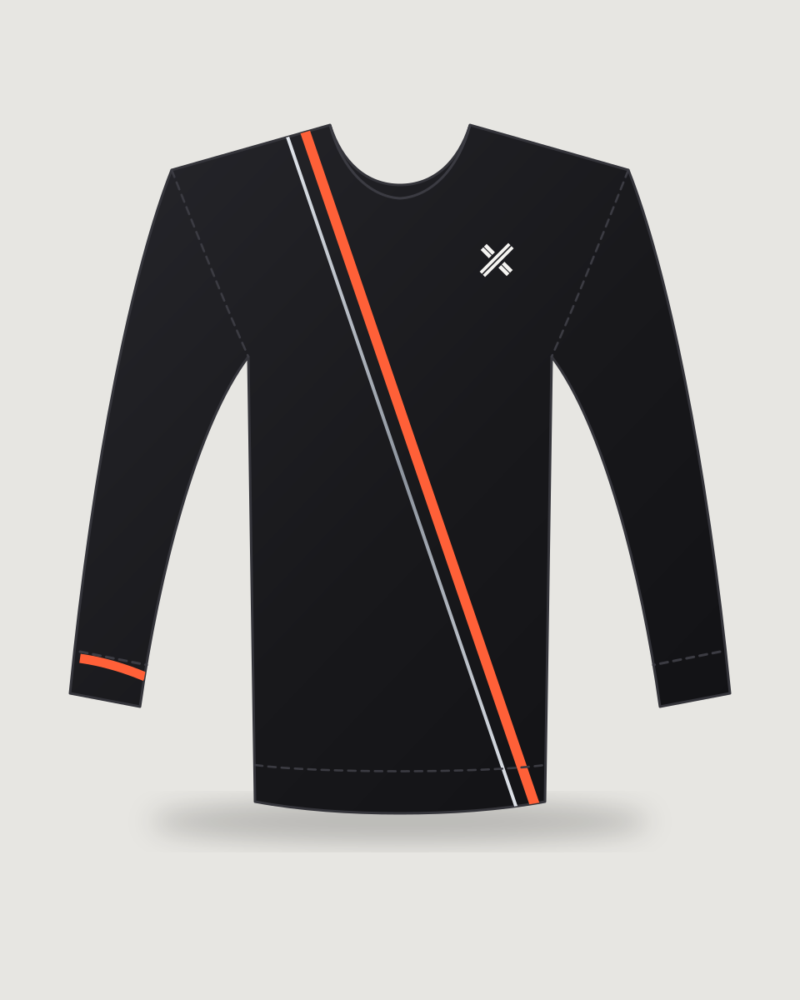
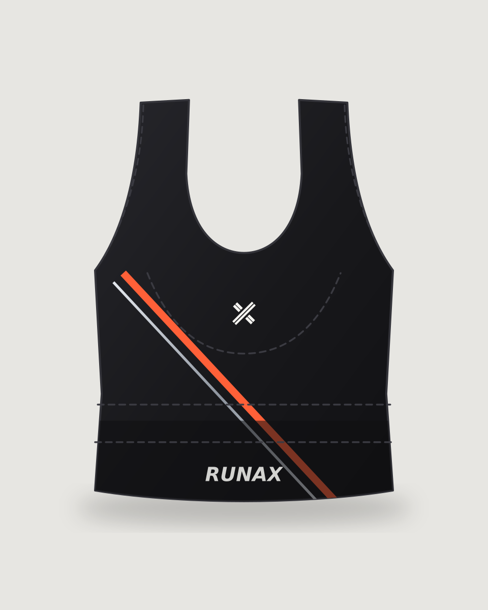
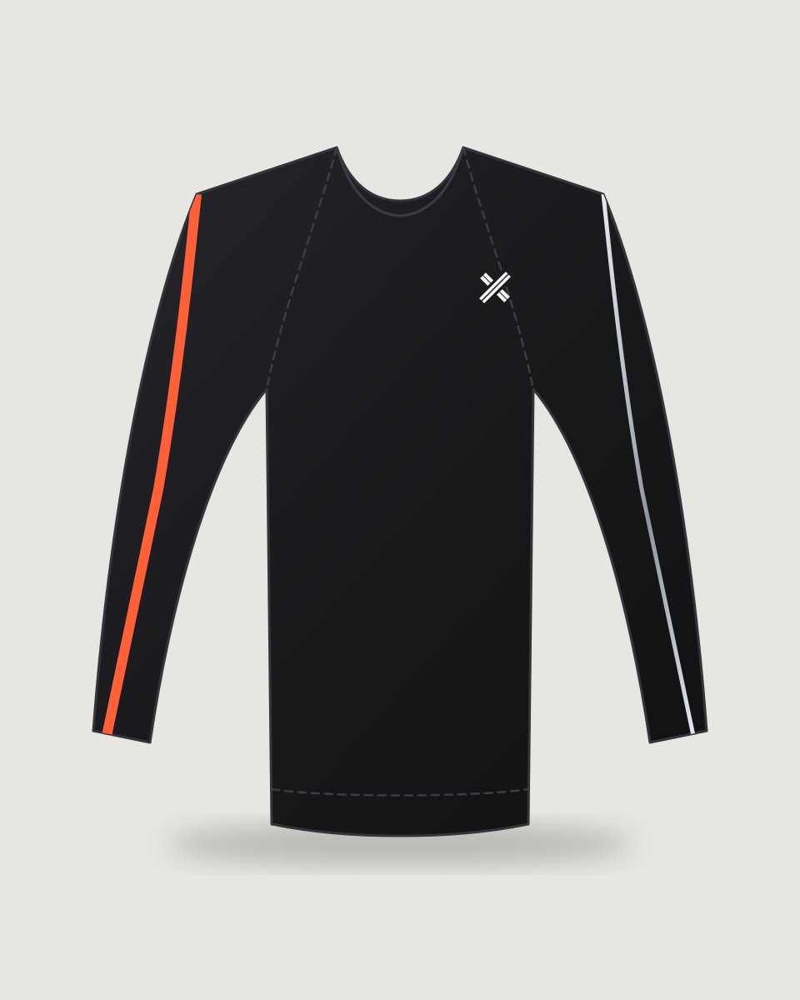
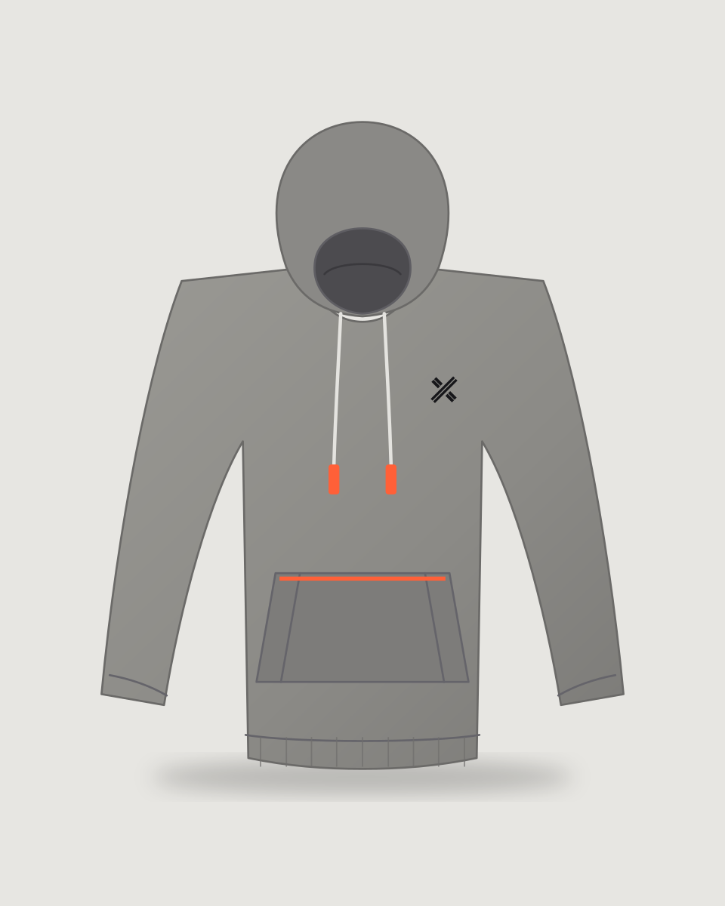
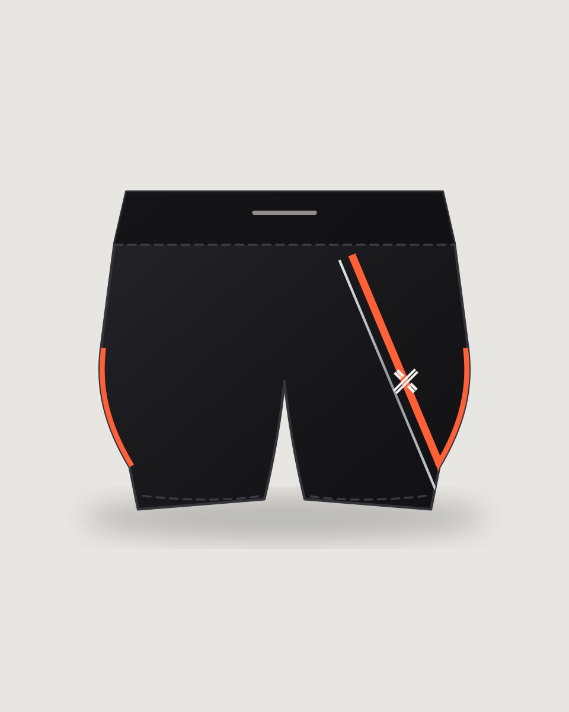
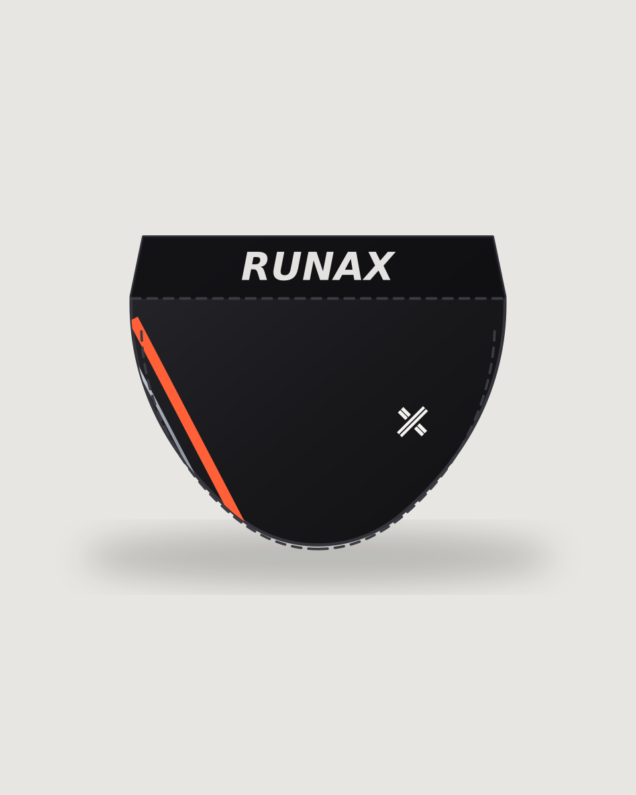
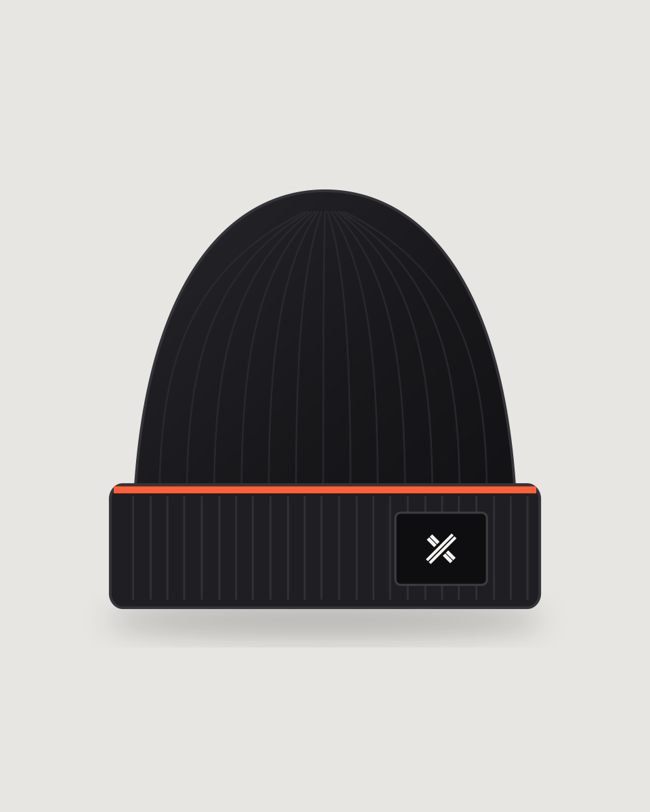
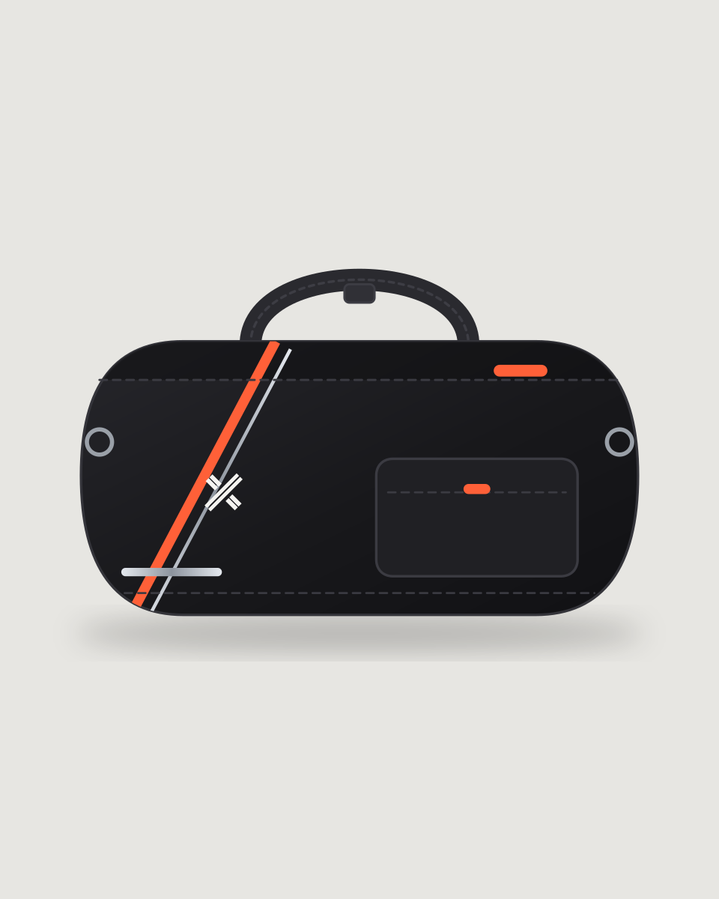
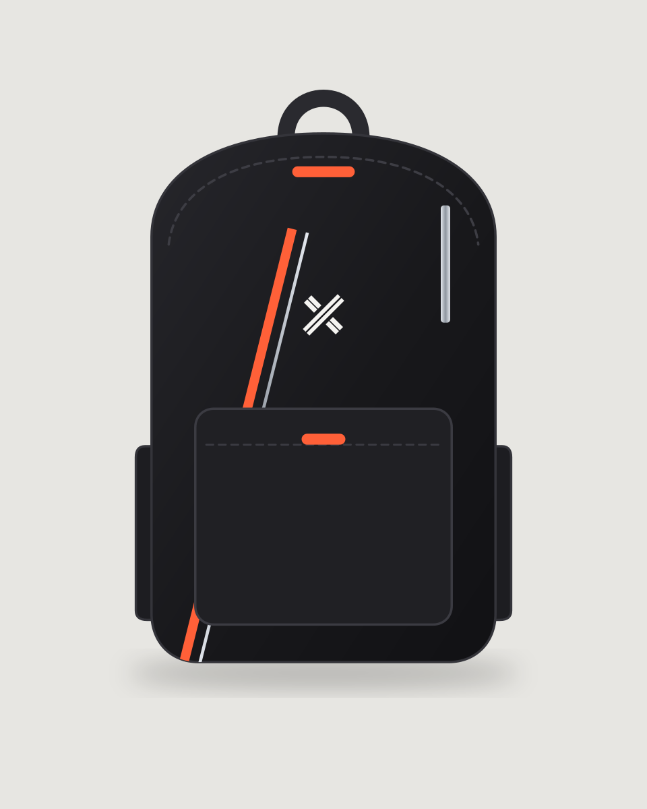

Hauts · T-shirts à manches courtes
Boutique RUNAX
Hauts, bas et accessoires de course. Filtre par activité, catégorie, taille, couleur ou prix, puis ouvre la fiche d’une pièce.
18 pièces
Prix en $ CA, avant taxes · Visuels de présentation : couleurs et détails peuvent varier légèrement











Essaie une autre catégorie, retire un filtre ou change ta recherche.
Avant de commander
| Taille | cm | po |
|---|---|---|
| TP | 86 à 91 | 34 à 36 |
| P | 91 à 96 | 36 à 38 |
| M | 96 à 101 | 38 à 40 |
| G | 101 à 106 | 40 à 42 |
| TG | 106 à 112 | 42 à 44 |
| TTG | 112 à 118 | 44 à 46 |
Tour de poitrine du corps, à mesurer sous les bras. Entre deux tailles, choisis la plus grande pour courir à l’aise. Chaque fiche affiche aussi le guide près du choix de taille.
Ajoute tes pièces au panier, choisis ta taille, puis passe à la commande. Les prix sont en dollars canadiens ; la TPS et la TVQ sont calculées avant le paiement.
Voir le panierRUNAX ne reprend ni n’échange les articles, sauf en cas de défaut de fabrication ou d’erreur de notre part : écris-nous dans les 14 jours suivant la réception et nous remplaçons ou remboursons l’article. Les droits prévus par la Loi sur la protection du consommateur du Québec ne sont pas limités.